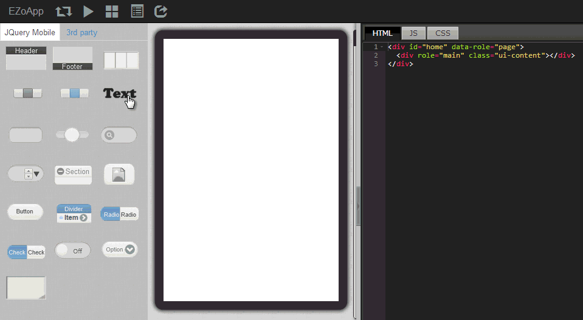
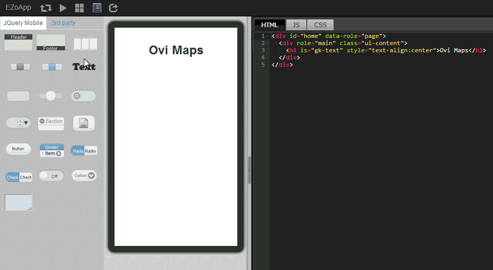
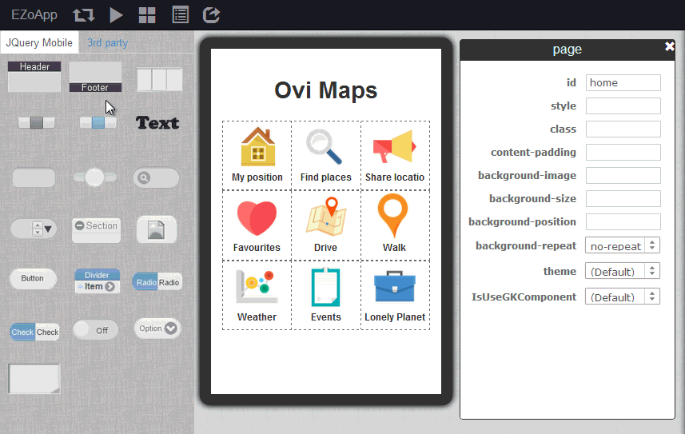
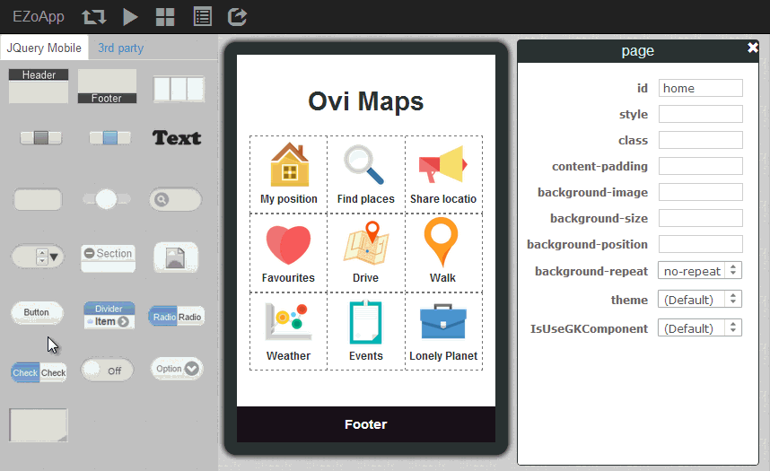

讲到开发一支 App，排版往往是令开发者最头痛的环节之一，甚至有时候会耗费超过了一半的开发时间在调整版面，俗话说的好，「魔鬼往往藏在细节里」，看似很简单的排版，却往往会造成工程师大大的困扰。因此 EZoApp 提供了所见即所得的设计工具，只需要利用拖拉以及调整数字的方式，搭配大家熟悉的简易 CSS 语法，就能够轻松做出各式各样的版面，而开发者更能够将心力投入在其他的设计细节上。
这里开始的 EZoApp 教学实作，将由简单的排版开始介绍，相信只要有心！人人都可以成为排版大师的！
范例链接：
基本组件实作 - grid 基础排版
大家可以点击链接开启 EZoApp 的 grid 排版范例，一面阅读一面进行操作，相信对于 EZoApp 的使用，能够更快上手喔！
首先我们要放上文字，放上文字的方法很简单，只需要用拖拉的方式将左侧 gk-text 组件拖拉至画面编辑区域当中，就能够快速产生一个文本块，接着只需要改变文字以及用 CSS 将文字对齐就好啰！
<h1 is="gk-text" style="text-align:center;">Ovi Maps</h1>

相当快速的处理好文字之后，我们要来放上 grid 的组件，同样以拖拉的方式把左侧 grid 组件拖拉到编辑区域，就可以产生一个预设为三个字段的 grid，如果我们要设定一个九宫格的 grid，只需要轻松拖拉三次即可完成，每个 grid 拖进去编辑区域后，都会产生下列对应的 HTML 程序代码， class="ui-grid-b" 是 jQuery Mobile 的预设格式，代表这是三个字段的 grid。
<div class="ui-grid-b" style="height:95px;">
<div class="ui-block-a" style="height:100%;"></div>
<div class="ui-block-b" style="height:100%;"></div>
<div class="ui-block-c" style="height:100%;"></div>
</div>

有了 grid 之后，我们只要在对应的字段内，利用 3rd Party 组件的
image ，就能够轻松的放上图片组件，或是直接输入图片的 HTML 语法，也可以轻松加入图片，这里列出加入图片的程序代码提供大家参考。
附带说明一点，如果是自己加入的程序代码，可以在图片的卷标内，加上
is="dragable" ，就能够让这张图片转换为 EZoApp 的图片可拖拉组件，是不是相当的方便呢！
<div class="ui-grid-b" style="height:95px">
<div class="ui-block-a" style="height:100%">
<img is="dragable" src="图片网址"/>
<h5 is="gk-text" style="text-align:center;">标题</h5>
</div> <div class="ui-block-b" style="height:100%">
<img is="dragable" src="图片网址"/>
<h5 is="gk-text" style="text-align:center;">标题</h5>
</div>
<div class="ui-block-c" style="height:100%">
<img is="dragable" src="图片网址"/>
<h5 is="gk-text" style="text-align:center;">标题</h5>
</div>
</div>
当我们把图片都一一放上之后，接着我们要制作一个 footer，制作 footer 的方法也相当简单，只需要拖拉 footer 组件进入编辑区域，接着在 footer 的属性面版上改变 footer 的样式，就能够轻松做出一个黑底样式的 footer。

最后我们仍然利用拖拉的方式，拖拉
button 组件放到编辑区域的 footer 上方，就可以在 footer 的左右两边建立按钮，然后同样的由属性面板更换按钮的 icon 与文字，就能够很快速的做出一个带有按钮的 footer 啰！
当然，除了可以由属性面板调整按钮的属性，因为按钮的组件也是建构在 jQuery Mobile 的基础组件之一，我们可以藉由下列的程序代码，更改按钮的样式，让整体更具有设计感。
<div data-role="footer" data-position="fixed" data-theme="b">
<h3>InfoChamp</h3>
<a class="ui-btn ui-btn-left ui-btn-icon-left ui-icon-gear ui-btn-icon-notext ui-corner-all" style="margin-top:0;"></a>
<a class="ui-btn ui-btn-right ui-btn-icon-left ui-icon-delete ui-btn-icon-notext ui-corner-all" style="margin-top:0;"></a>
</div>

范例链接：
基本组件实作 - grid 基础排版